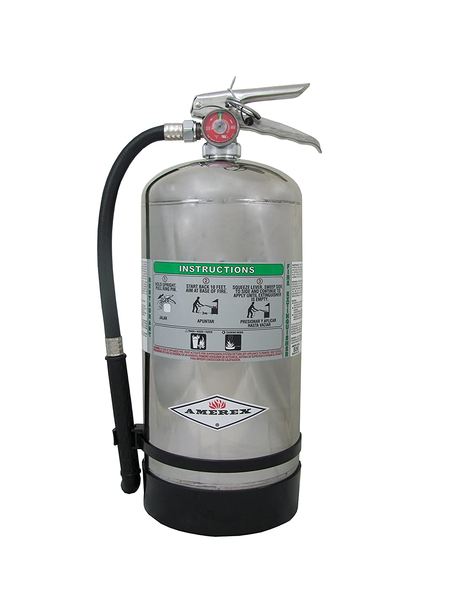

- Water or air-pressurized water (APW) extinguishers:
- Designed for Class A fires only
- Large silver container, 2 to 3 ft. tall, weighing about 25 lbs. when full
- Filled 2/3 with ordinary water, then pressurized with air
- Detergents may be added
- Cool the surface to remove the heat
- Never use to extinguish flammable liquid fires or electrical fires
|
 Water or air-pressurized water (APW) extinguisher
Water or air-pressurized water (APW) extinguisher
|
- Carbon Dioxide (CO2) extinguishers:
- Designed for Class B and Class C fires only
- Red cylinders, ranging from 5 to 100 lbs. or larger, with a hard horn and no pressure gauge
- Filled with Carbon Dioxide (CO2), under extreme pressure
- Displace oxygen; dry ice pieces also have cooling effect
- Never use in confines space without respiratory protection
|
 Carbon Dioxide (CO2) extinguishers
Carbon Dioxide (CO2) extinguishers
|
- Dry Chemical extinguishers (Multi-purpose)
- May be used on Class A, Class B, and/or Class C fires (check label)
- Red cylinders, ranging in size from 5 to 20 lbs.
- Fire-retardant powder is the extinguishing agent and is propelled by a compressed, non-flammable gas
- Separates fuel from oxygen; powder also interrupts chemical reaction
|
Dry Chemical extinguishers (Multi-purpose)
|
- Class D Fire Extinguishers are used for fighting class D fires including combustible metals or combustible metal alloys.
- Class D Fire Extinguishers are mainly used for the aircraft industry, auto body shops, factories that work with metals, and other metal fire hazards.
- Usually yellow colored.
|
 Class D Sodium Chloride Fire Extinguisher
Class D Sodium Chloride Fire Extinguisher
|
- Class K – dry and wet chemical extinguishers
- Designed for kitchen fires
- Only intended to be used after activation of built-in hood suppression system
- Filled with electrically conductive extinguishing agents; use only after electrical power to appliance has been shut off
- Potassium bicarbonate may be used in dry types; wet chemical extinguishers spray a fine mist
|

Class K – dry and wet chemical extinguishers
|